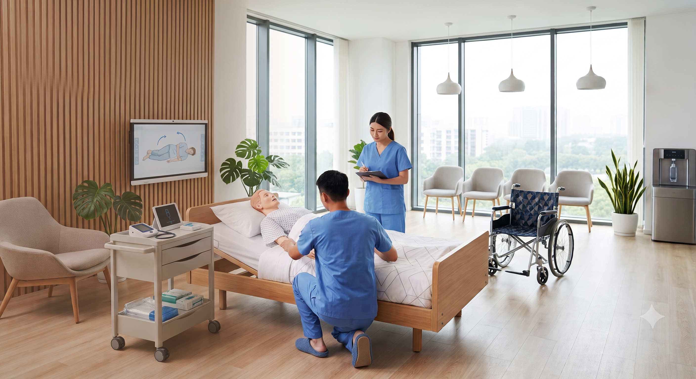
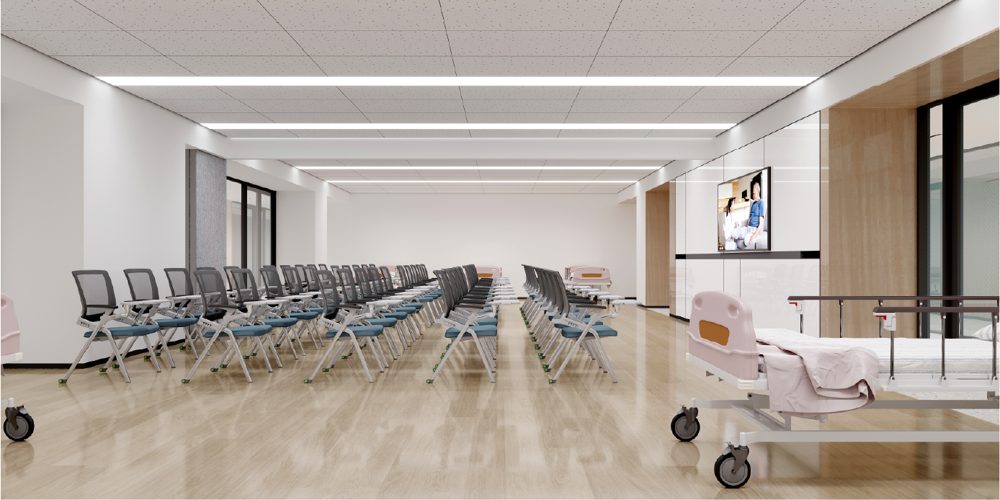
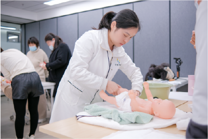
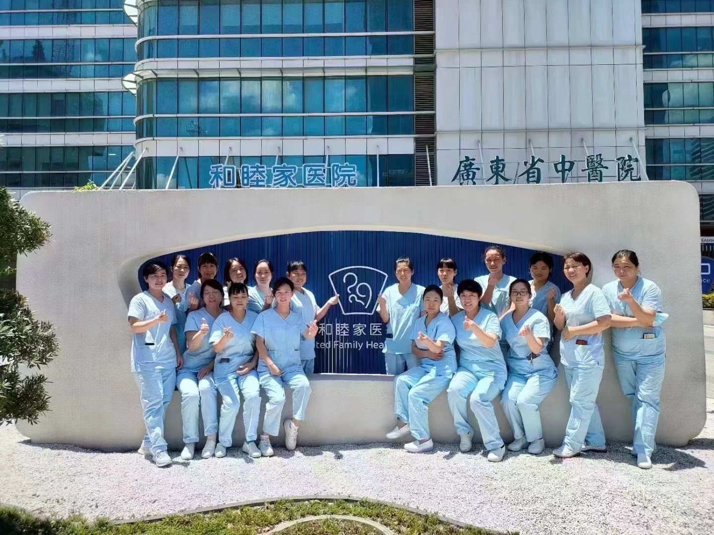
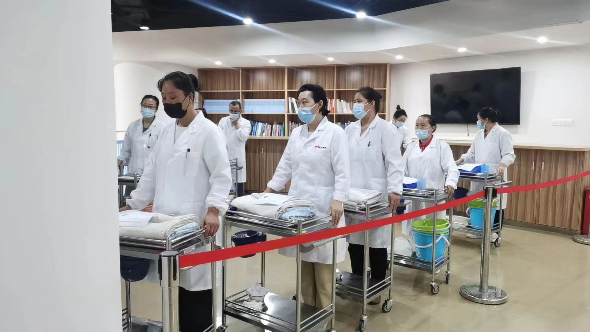
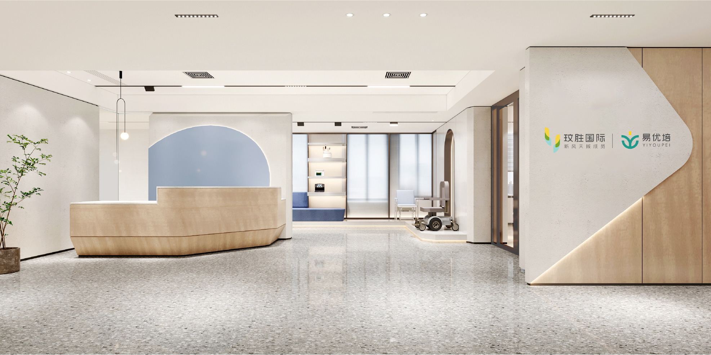

1:1全实景沉浸式学习
校区内配备适老化教室、早教教室、专护师教室、收纳教室、毕业大礼堂、学员休息区及直播间等多元化功能空间，打破传统课堂的空间束缚；同时，每门课程均配置1:1全实景模拟装置，涵盖厨房间、衣帽间、卧室、早教互动区及拟老化设备等，将单向讲授转化为沉浸式互动实操场景，让学员在真实环境中高效学习、激发潜能。

品牌介绍
玟胜国际由香港新风天域集团投资创立，是一家专注于为养老、母婴、大健康及家政服务行业培训专业服务人员的连锁品牌，总部设立于上海。玟胜国际结合国际先进的培训理念及标准，自主研发系统化的行业技能提升课程，依托集团规模优势，实现“研-教-就业”一体化，持续为行业赋能及输送高质量的服务人才。
业务介绍
校区内配备适老化教室、早教教室、专护师教室、收纳教室、毕业大礼堂、学员休息区及直播间等多元化功能空间，打破传统课堂的空间束缚；同时，每门课程均配置1:1全实景模拟装置，涵盖厨房间、衣帽间、卧室、早教互动区及拟老化设备等，将单向讲授转化为沉浸式互动实操场景，让学员在真实环境中高效学习、激发潜能。
引入国际先进的培训理念及标准全面覆盖养老护理、母婴护理、家政服务及互联网营销四大方向，开设养老护理员（五级至三级）、家政服务员（母婴/家务方向，五级至四级）及互联网营销师（直播销售员，五级至四级）等阶梯式课程，内容涵盖孕产妇与婴幼儿照护、家庭餐制作与收纳清洁、老年生活照料与康复护理，以及短视频拍剪与直播营销等实用技能。

讲师团队平均行业教龄达8年以上，全员持有高级职业技能证书，兼具三甲医院临床护理、重症监护、助产等一线实战经验与丰富的授课能力，覆盖母婴护理、养老护理、康复保健、小儿推拿、早期教育及产后康复等多元专业领域。团队秉承循证医学理念与国际化教学视野，匠心研发课程体系，从教学质量把控到创新教学设计全程护航，致力于为学员提供专业、系统、实用的培训体验，助力每一位学员成就更具竞争力的职业未来。

玟胜国际凭借卓越的教学能力与专业的办学理念，持续为行业输送高品质服务人才，学员在各类政府及行业技能竞赛中屡获佳绩。与此同时，学校积极承办政府及企业职业技能培训与竞赛项目，以高标准推动劳动就业和行业资源链接等，获得了社会、各地政府、企业、社会团体的到访与认可。

覆盖全国50余个城市、超过8000家合作渠道的就业网络，与上千家养老单位、三甲医院、康复医院及护理院建立了紧密合作关系；作为和睦家医疗指定的母婴护理定向委培机构，学员可直通高端就业通道；同时依托集团旗下易得康（业务覆盖40多城，拥有养老照护品牌易得康、母婴照护品牌优护佳与易优贝）的定向内推资源，每日服务数万客户，为学员提供从培训到就业的全程无忧保障。

